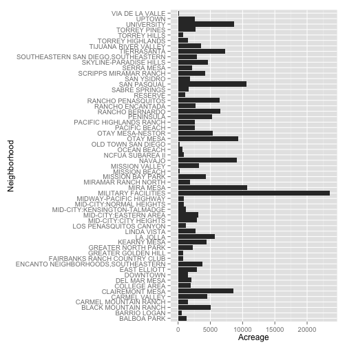

Shiny Water Explorer Pitch
Maksim Pecherskiy
September 26, 2015
Purpose
- Residents from different neighborhoods consume water in different amounts.
- Show where the top X% of water consumers are living.
- Show which neighborhoods consume the most water.
Assumptions To Be Mitigated
- Data used is a small sample.
- Not adjusted for multi-tenant buildings
- Not adjusted for businesses
- Areas differ in demographics and weather patterns - comparing just on consumptions is incomplete.
- Areas differ in acreage size (next slide)
Area Acreages
g <- ggplot(data = com_plan@data, aes(x = cpname, y = acreage)) +
geom_bar(stat="identity") + coord_flip() + xlab("Neighborhood") +
ylab("Acreage")
print(g)

Next Steps
- Provide more controls for smarter analysis of water usage
- Filter for multi-tenant
- Filter for residential
- Bring in weather data
- Adjust for acreage of area